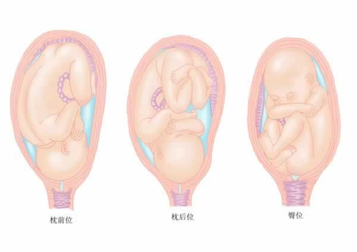
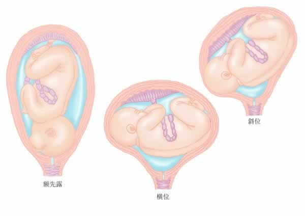
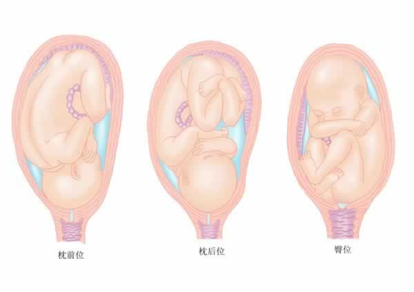
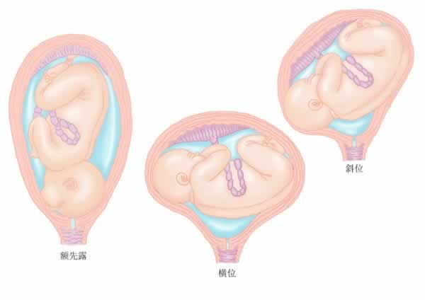

调整胎位的方法
很快就要分娩了，准妈妈可以通过一些方法，帮助宝宝调整到最佳胎位。胎位分为很多种：枕前位、枕后位、臀位、额先露、横位和斜位等。 枕前位: 是最佳胎位，指宝宝入盆时头向下、后脑勺稍微朝向准妈妈腹部的前方。这样的胎位会使宝宝比较容易下移，让你的分娩更顺利。
枕后位：指宝宝的后脑勺朝向准妈妈的脊柱，分娩时导致背痛且分娩速度较慢。
枕后位：指宝宝的后脑勺朝向准妈妈的脊柱，分娩时导致背痛且分娩速度较慢。
臀位：指宝宝的臀部向下。
额先露：指宝宝的头部微微扬起。
横位：宝宝在子宫里是横躺的状态，会让准妈妈感到肚皮发紧发硬。
斜位：宝宝斜躺在子宫里，可能需要进行剖腹产手术。




有一些方法可以帮助准妈妈调整胎位，练习方法如下：
1. 采取坐姿时可以加个坐垫来垫高你的臀部。
2. 选择座椅时，要确保坐上去以后你的臀部高于膝盖。
3. 不能久坐，如果工作需要久坐，每隔一段时间要起身走走。
双手着地、双膝跪地支持身体的姿势（如瑜伽中猫式准备的姿势），每天练习10分钟左右。